Сцена рождения · партия 01
12 отдельных изображений: комната, младенец в люльке, четверо взрослых и шестеро старших детей. Ниже — примеры сборки и все исходные PNG. Игровой экран проекта пока не изменён.
Мама, папа и новорождённый
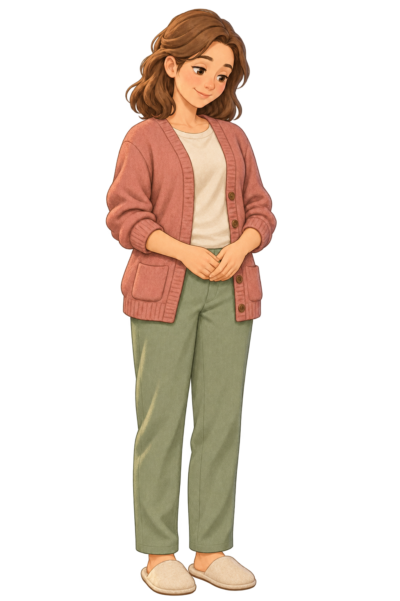
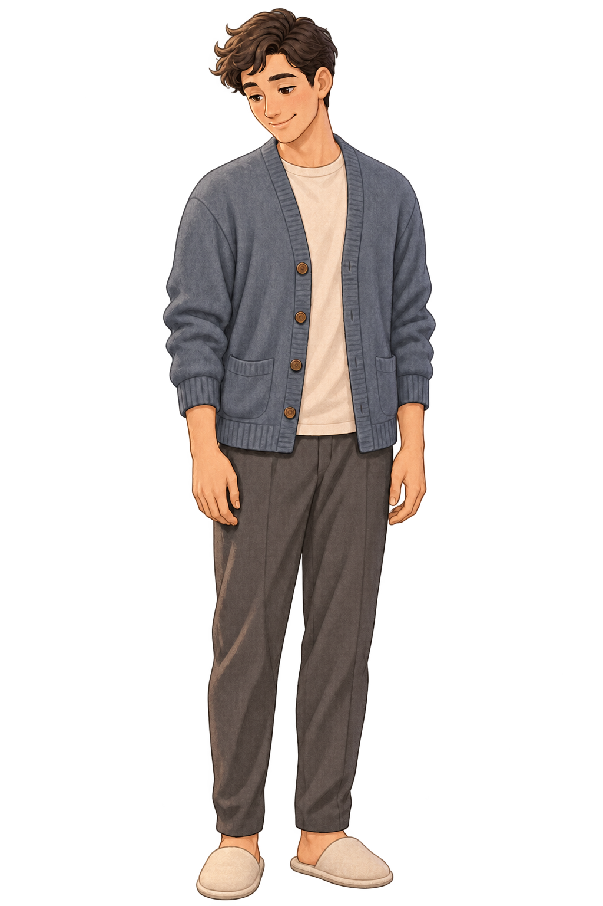
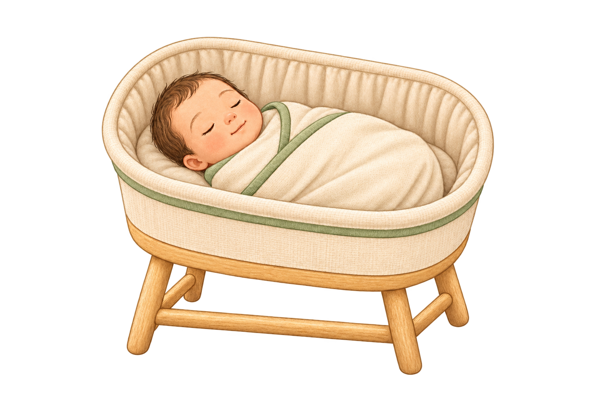
Две мамы, три сестры и новорождённый
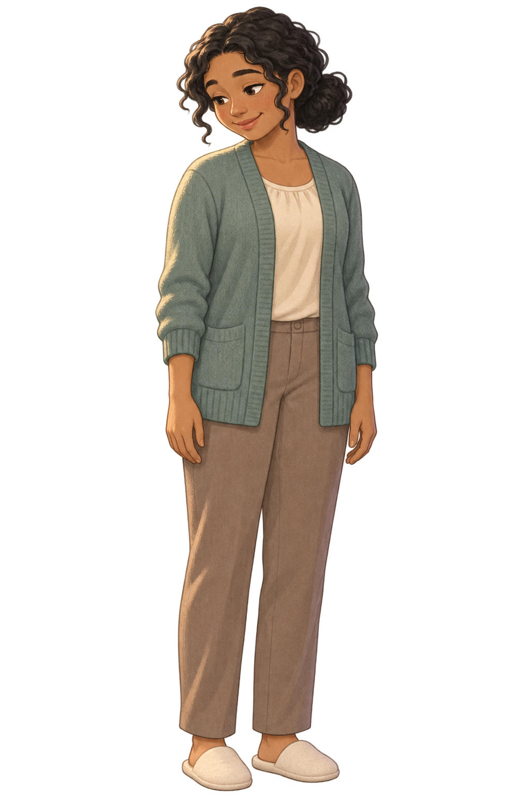
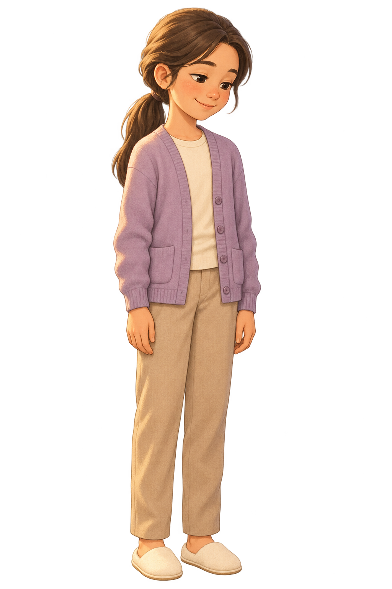
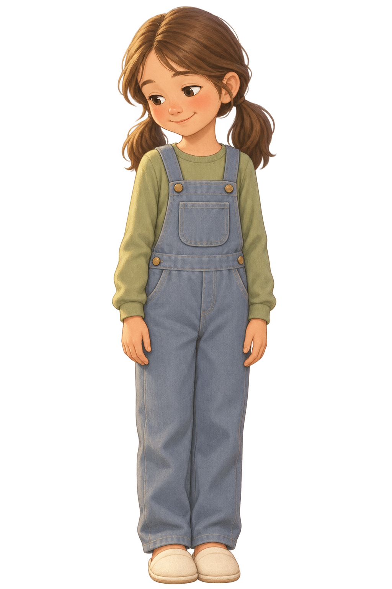
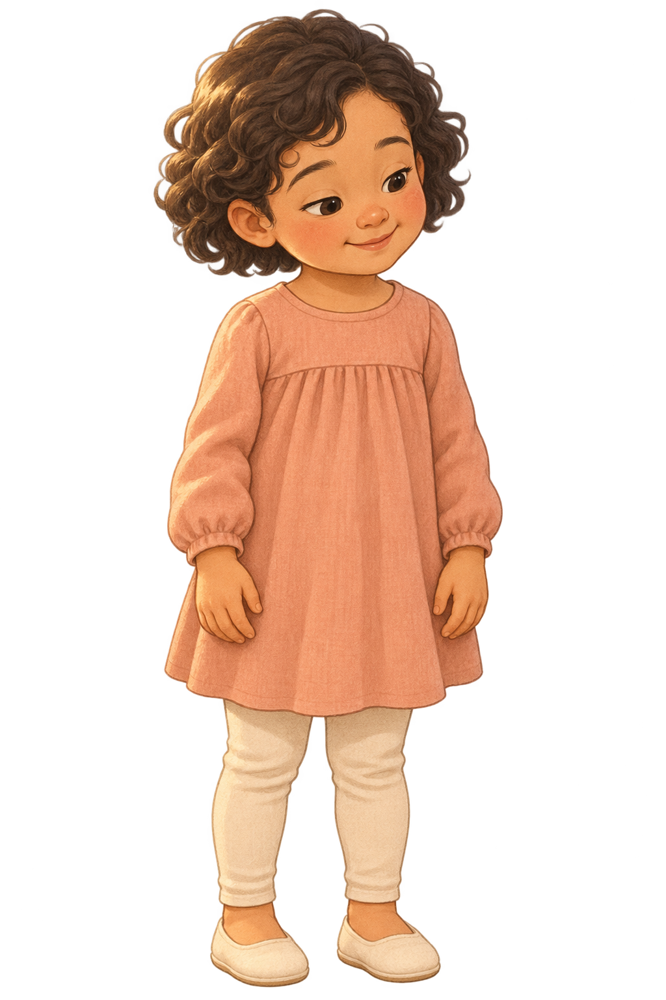
Два папы, три брата и новорождённый
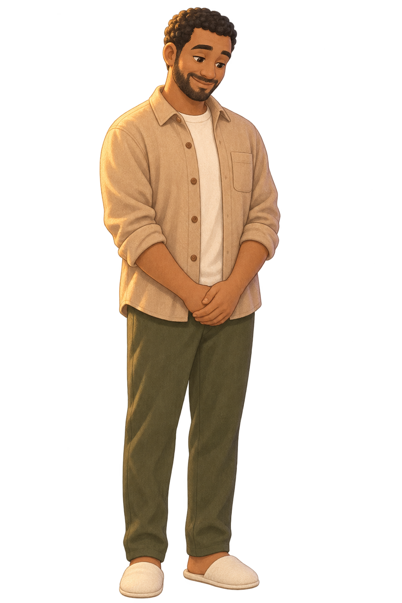
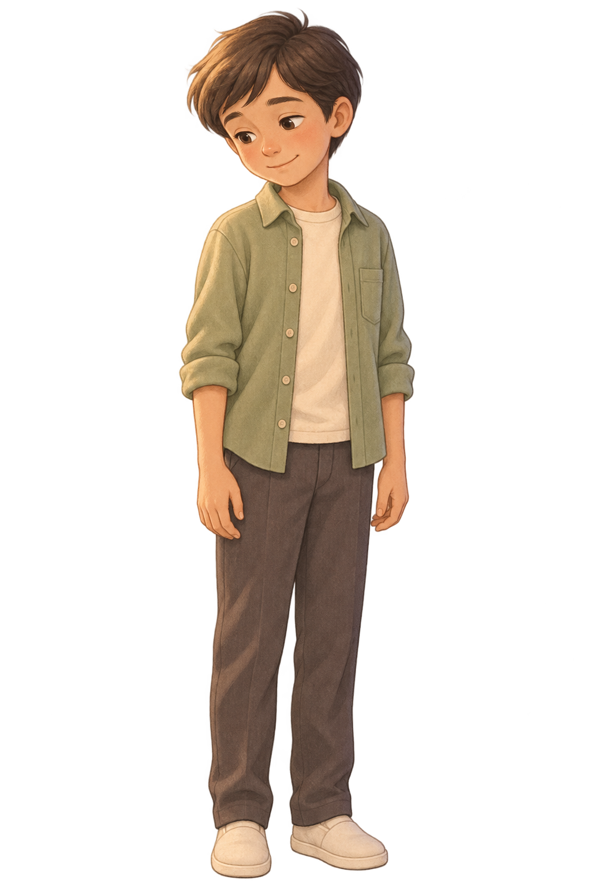
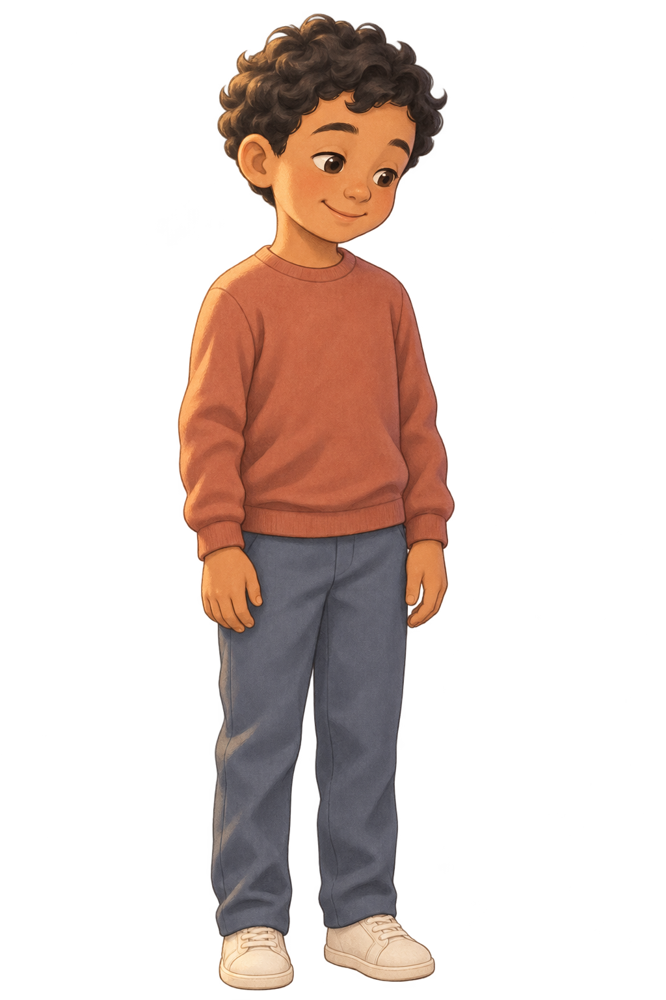
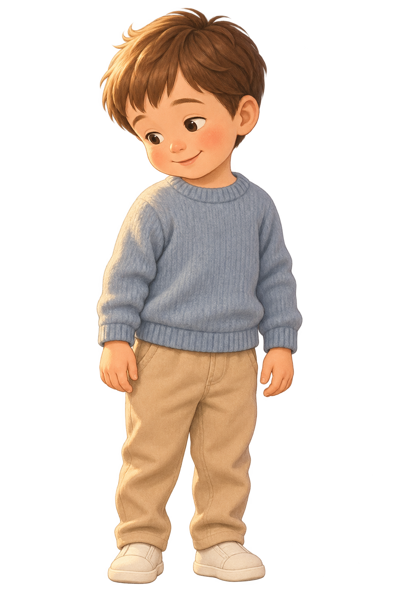
Все изображения
Шахматный узор показывает прозрачность. Возраст детей указан примерно: это старшие братья и сёстры на момент рождения героя.
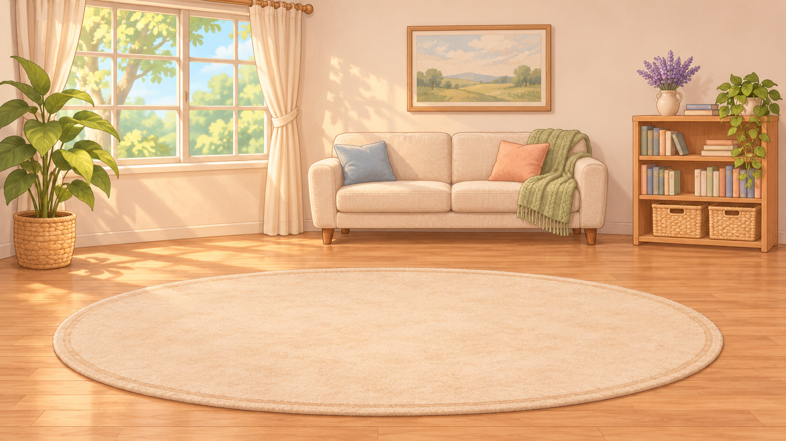